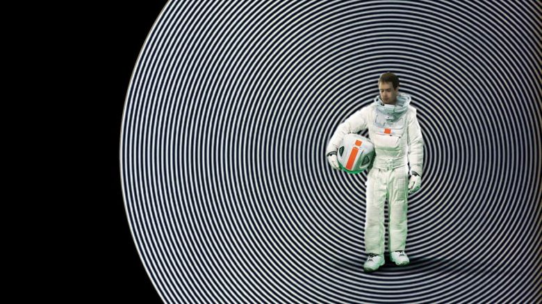

Koyaanisqatsi de Godfrey Reggio Pays d'origine : USA Année de sortie : 1983 Scénario : Ron Fricke, Godfrey Reggio, Michael Hoenig, Alton Walpole Producteur : Francis Ford Coppola Musique : Philip Glass Le film n'est pas une œuvre narrative mais documentaire. Il propose des images où l’on joue sur les échelles d’espace et de temps pour montrer au spectateur le monde où il vit sous un angle différent, et l’inviter lui-même à conclure dans le sens qu’il jugera bon. On peut considérer ce film par moments comme une description enthousiaste de la technologie, parfois au contraire comme une vive critique de celle-ci. Le réalisateur admet avoir voulu montrer ce qu’il nomme la beauté de la bête. Une chose ne fait pas de doute à la vue du film : la technologie qui, il y a peu (du temps des Hopis, par exemple) n'était qu'utilitaire, est maintenant omniprésente et se développe selon sa logique propre. Une image impressionnante d’une ville vue du ciel à différentes échelles se termine par la photographie des circuits d’un microprocesseur ; l’image est claire : la population humaine, quand elle est prise dans son ensemble, a (à peu près) autant de liberté d'action que les électrons dans un microprocesseur. Même si l’individu reste libre, son ensemble, lui, ne l’est plus totalement et n’est pas programmé pour l’être. La frénésie de l’activité urbaine (dans la très esthétique séquence The Grid, tournée à l’accéléré) alterne avec une image frappante d’ennui et de vide intérieur des individus quand ils ne sont plus en train de produire (séquences passées au ralenti). Réserver votre place Bande-annonce Les autres films de la journée  Moon Un film de Duncan Jones Alors là y a un synospis assez court, vois-tu, qui raconte un peu l'histoire du film, histoire de. En savoir plus Isle of Dogs Un film Wes Anderson Alors là y a un synospis assez court, vois-tu, qui raconte un peu l'histoire du film, histoire de. En savoir plus